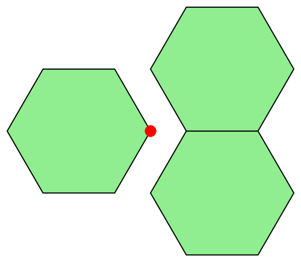

The diagrams EDSL
A declarative vector graphics library
The Asymptote vector graphics language
void aFunction(pair A, real s, int q, bool top=true)
{
pair B=A-(1,sqrt(2))*s/2;
pair C=B+s;
if(top) draw(A--B--C--cycle);
draw((A+B)/2--(B+C)/2--(A+C)/2--cycle);
if(q > 0) {
aFunction(A,s/2,q-1,false);
aFunction((A+B)/2,s/2,q-1,false);
aFunction((A+C)/2,s/2,q-1,false);
}
}
aFunction((0,1),1,5);Sierpinski Triangle
The Asymptote vector graphics language
Sierpinski Triangle
diagrams EDSL
sierpinski 1 = triangle 1
sierpinski n = s
===
(s ||| s) # centerX
where s = sierpinski (n-1)
Sierpinski Triangle
diagrams EDSL
sierpinski 1 = circle 1 # fc orange
sierpinski n = s
===
(s ||| s)
where s = sierpinski (n-1)
Sierpinski Triangle
sierpinski shape color alignment 1 = shape 1 # fc color
sierpinski shape color alignment n =
s
===
(s ||| s) # alignment
where s = sierpinski shape color alignment (n-1)
5 Active Developers
67 Contributors
- Chris Chalmers
- Daniel Bergey
- Jeffrey Rosenbluth
- Ryan Yates
- Brent Yorgey
Diagrams 1.3 released
Projections

Diagrams 1.3
Path Intersections

Diagrams 1.3
Grouping for Opacity

Diagrams 1.3
New Backends
- diagrams-pgf
- diagrams-canvas
- diagrams-html5
A Diagram
{-# LANGUAGE NoMonomorphismRestriction #-}
import Diagrams.Prelude
import Diagrams.Backend.SVG.CmdLine
diagram :: Diagram B
diagram = circle 1 # lw ultraThick # lc purple # fc orange
main = mainWith $ frame 0.1 diagram
Composing Diagrams
atop

c1 = circle 0.5 # fc steelblue
c2 = circle 1 # fc orange
diagram :: Diagram B
diagram = c1 `atop` c2
diagram' :: Diagram B
diagram' = c1 <> c2
Composing Diagrams
Side by Side

c1 = circle 0.5 # fc steelblue
c2 = circle 1 # fc orange
diagram :: Diagram B
diagram = c1 ||| c2
diagram' :: Diagram B
diagram' = c1
===
c2
Composing Diagrams
Every diagram has a local origin

Composing Diagrams
Local Origin

c1 = circle 0.5 # fc steelblue
c2 = circle 1 # fc orange
diagram :: Diagram B
diagram = (c1 <> c2) # showOrigin
Side by Side
||| is moveOriginTo + atop

Composing Diagrams
with beside

c1 = circle 0.5 # fc steelblue
c2 = circle 1 # fc orange
diagram :: Diagram B
diagram = beside (1 ^& 1) c1 c2 # showOrigin
Moral
All defined in terms of atop and moveOriginTo
- beside, |||, ===
- cat, hcat, vcat, hsep, vsep
- juxtapose
- position
- appends
How do we know how far to move the origin?
Bounding Boxes- Envelopes
Bounding Boxes
beside (1, 1)
Envelopes
Envelopes
beside (1, 1)
Envelopes
beside (1, 1)
Envelopes
beside (1.5, 1)

Envelopes
beside (1.5, 1)
Envelopes
Depend on the local origin
- not always intuitive
- extensional not intensional
- not the same as the convex hull
https://github.com/diagrams/diagrams-doc/blob/master/envelope/envelope.pdf
Align
Moves the local origin to the envelope
h = hexagon 1 # fc lightgreen
sOrigin = showOrigin' (with & oScale .~ 0.04)
diagram :: Diagram B
diagram = h # alignR # sOrigin
<> h # alignBL # sOrigin
<> h # alignTL # sOrigin
Trace
Snug
h = hexagon 1 # fc lightgreen
sOrigin = showOrigin' (with & oScale .~ 0.04)
diagram :: Diagram B
diagram = h # alignR # sOrigin
-- why not snugBL ?
<> h # snugB # snugL # sOrigin
<> h # snugT # snugL # sOrigin
A 2 Mirror Kaleidoscope
Preliminaries
import Control.Monad (replicateM)
import Control.Monad.Random
import Data.Colour.Palette.ColorSet
import Data.List (zipWith, zipWith3)
import Diagrams.Prelude
import Diagrams.Backend.SVG.CmdLine
import System.Random
sizeValue :: (RandomGen g) => Rand g Double
sizeValue = getRandomR (0.05, 0.25)
coordValue :: (RandomGen g) => Rand g Double
coordValue = getRandomR (-0.5, 0.5)
Generating The Confetti
confetti :: Int -> Rand StdGen (Diagram B)
confetti n = do
ss <- replicateM n sizeValue -- radius
cs <- replicateM n getRandom -- color index
as <- replicateM n getRandom -- opacity
xs <- replicateM n coordValue -- x coordinate
ys <- replicateM n coordValue -- y coordinate
let mkCirc :: Double -> Int -> Double -> Diagram B
mkCirc s c a = circle s # fc (webColors c)
# opacity a # lw none
pos = zipWith mkP2 xs ys
conf = zipWith3 mkCirc ss cs as
return $ atPoints pos conf
Generating The Confetti
seed = 0, pieces = 50
mkConfetti :: Int -> (StdGen -> Diagram B)
mkConfetti n = evalRand $ confetti n
Cut out a Triangle
isoceles :: (TrailLike t, V t ~ V2) => Int -> t
isoceles n = polygon
(def & polyType .~ PolySides [a1 @@ turn, a2 @@ turn] [1,1]
& polyOrient .~ OrientH )
where
a1 = 1/2 - (1 / fromIntegral n)
a2 = 1/2 - 1/2 * a1
mkTriangle :: Int -> Diagram B -> Diagram B
mkTriangle n = clipped tri . lw none
where
tri = isoceles n # rotateBy (-1/4 - 1 / (2 * fromIntegral n))
The Triangle

Reflect the Triangle
outlines just for visualization
Keep reflecting

The Kaleidoscope
iterateIdx :: Integral i => (i -> a -> a) -> a -> [a]
iterateIdx f t = go f t 0
where
go f t i = let t' = f i t
in t': go f t' (i + 1)
kaleidoscope :: Diagram B -> Int -> Diagram B
kaleidoscope d n = mconcat . take n $ iterateIdx next tri
where
tri = alignBR $ mkTriangle n d
next t = reflectAbout
(0 ^& 0)
(rotateBy (-fromIntegral t / fromIntegral n) xDir)
The Kaleidoscope
60 degrees, 6 triangles

The Kaleidoscope
36 degrees, 10 triangles

Making GIFs with diagrams

Pendulum
The Background

stripes :: Diagram B
stripes = (strutX 32
||| stripe
||| strutX 32
||| stripe
||| strutX 30) # center
where stripe = square 100 # scaleX 0.03 # fc white # lc white
Pendulum
The Ball
radial :: Texture Double
radial = mkRadialGradient (mkStops [(white,0,1), (black,1,1)])
((-0.25) ^& (0.25)) 0.1 (0 ^& 0) 1.5
GradPad
Pendulum
pend :: V2 Double -> Diagram B
pend v = bob # translate (e .-. origin) <> rod
where
ellipsePath :: Diagram B
ellipsePath = circle 25 # scaleX 1.5
bob = scale size $ circle 1 # fillTexture radial # lw none
size = 3.5 * sqrt (2 - y)
rod = arrowBetween' (with & shaftStyle %~ lw thick # lc gray
& arrowHead .~ noHead) s e
s = (0 ^& 50)
e = fromMaybe origin (rayTraceP origin v ellipsePath)
(x, y) = unr2 v -- v ^. r2Iso
Pendulum
All together now
mkFrame :: V2 Double -> Diagram B
mkFrame v
| (snd $ unr2 v) > 0 = stripes <> pend v
-- | v ^. (r2Iso . _2) > 0 ...
| otherwise = pend v <> stripes
dias = map mkFrame vs
where vs = [fromDirection $ rotateBy(a/100) xDir | a <- [0..99]]
delays = take 100 (repeat 3)
gif :: [(Diagram B, Int)]
gif = zip dias delays
main = mainWith $ gif
A 3 Mirror Kaleidoscope

Design Challenge
What's so tricky about arrows?
The Arrow API
Desired Features
- Arrow heads should not scale with the diagram.
- Arrows should connect the same points before and after scaling.
- Shafts can be any curve not just straight lines.
- Arrow heads can be translucent.
The Arrow API

Arrow heads and tails

Scale Invariance
1. Arrow heads should not scale with the diagram

Scale Invariance
2. Arrows should connect the same points before and after scaling

Shafts
3. Shafts can be any curve not just straight lines
Heads and Tails
4. Arrow heads can be translucent
Heads and Tails
Therefore we can't overlap the head and the shaft

We have two related problems
Related because we need to know the final size of the diagram
- How to scale arrows
- Joint size depends on shaft width
Line Width and Arrow Length
Measurement Units
- local - just like argument x to circle x, square x, etc
- normalized - proportion of final diagram size, e.g 0.1 means 10%
- output - e.g.pixels
- global - for backwards compatibility
The Diagram type
Overview
- Diagrams are trees built from the leaves up.
- Every time two diagrams are composed the combined envelope is cached.
- Attributes like fill color and transforms like scale are stored as internal nodes.
- The tree is compiled from the top down.
The Diagram type
type Diagram b = QDiagram b (V b) (N b) Any
newtype QDiagram b v n m
= QD (DUALTree (DownAnnots v n)
(UpAnnots b v n m)
Annotation
(QDiaLeaf b v n m) )
deriving Typeable
data QDiaLeaf b v n m
= PrimLeaf (Prim b v n)
| DelayedLeaf (DownAnnots v n -> n -> n -> QDiagram b v n m)
deriving Functor
The Diagram type
type UpAnnots b v n m = Deletable (Envelope v n)
::: Deletable (Trace v n)
::: Deletable (SubMap b v n m)
::: Query v n m
::: ()
type DownAnnots v n = (Transformation v n :+: Style v n)
::: Name
::: ()
data Annotation
= Href String -- ^ Hyperlink
| OpacityGroup Double
deriving Show
Simplified Diagram type
type Diagram = (Envelope, DiagramTree)
data DiagramTree
= QDiaLeaf
| Trans Transformation DiagramTree
| Concat [DiagramTree]
data QDiaLeaf
= PrimLeaf
| DelayedLeaf (Transformation -> n -> n -> DiagramTree )
An Example
What needs to happen to render this arrow?
-- pseudo-code
diagram = Trans (scale 500) (Concat [arrow, Concat [circle 1, square 2]])
L-Systems
a.k.a. Lindenmayer Systems
L-System
A parallel rewriting system - formal grammar
- Alphabet
- Production rules
- Initial axiom
- Aristid Lindenmayer - 1968
L-Systems
Example - Sierpinski tirangle
- Axiom: FX
- Rule 1: F >> Z
- Rule 2: X >> +FY-FX-FY+
- Rule 3: Y >> -FX+FY+FX-
L-Systems
Sierpinski triangle
sierpinski :: RealFloat n => Int -> TurtleState n
sierpinski n = lSystem n (60 @@ deg) (symbols "FX") rules
where
rules = M.fromList [ rule 'F' "Z"
, rule 'X' "+FY-FX-FY+"
, rule 'Y' "-FX+FY+FX-" ]
L-Systems
Hexagonal Gosper curve
hexGosper :: RealFloat n => Int -> TurtleState n
hexGosper n = lSystem n (60 @@ deg) (symbols "FX") hex
where
hex = M.fromList [ rule 'F' "Z"
, rule 'X' "FX+FY++FY-FX--FXFX-FY+"
, rule 'Y' "-FX+FYFY++FY+FX--FX-FY" ]
L-Systems
A tree
tree3 :: RealFloat n => Int -> TurtleState n
tree3 n = lSystem n (1/16 @@ turn) (symbols "F") tree
where
tree = M.fromList [rule 'F' "FF-[->F+>F+>F]+[+>F->F->F]"]
L-Systems
Another tree
tree4 :: RealFloat n => Int -> TurtleState n
tree4 n = lSystem n (1/18 @@ turn) (symbols "X") tree
where
tree = M.fromList [ rule 'X' "F>>[+X]F>>[-X]+X"
, rule 'F' "FF"]
L-Systems
The Language
data Symbol n
= F -- 'F'
| G -- 'f'
| Plus -- '+'
| Minus -- '-'
| Reverse -- '!'
| Push -- '['
| Pop -- ']'
| X Int -- 'X', 'Y', 'Z'
| Width n -- '<', '>'
| Delta n -- '(', ')'
deriving (Eq, Ord, Show)
-- | Production rules.
type Rules n = Map (Symbol n) [Symbol n]
L-Systems
Generating the strings
-- | Successive generations of the production rules applied to the
-- starting symbols.
generations :: Ord n => Rules n -> [Symbol n] -> [[Symbol n]]
generations dict syms = iterate (concatMap (produce dict)) syms
where
produce d s = fromMaybe [s] (M.lookup s d)
L-Systems
The Interpreter
lSystemR :: (Floating n, Ord n) => [Symbol n] -> Reader (Environment n) (TurtleState n)
lSystemR syms = go startTurtle syms
where
go turtle [] = return turtle
go turtle (x:xs) = case x of
F -> go (forward 1 . penDown $ turtle) xs
G -> go (forward 1 . penUp $ turtle) xs
Plus -> do
env <- ask
go (left (angleInc env ^. deg) turtle) xs
Minus -> do
env <- ask
go (right (angleInc env ^. deg) turtle) xs
Reverse -> go (left 180 turtle) xs
L-Systems
The Interpreter continued
-- ...
Push -> local (push (penUp turtle)) (go turtle xs)
Pop -> do
env <- ask
case turtleStack env of
[] -> error "Nothing to pop"
(t:_) -> local pop $ go (t { currTrail = currTrail turtle
, paths = paths turtle}) xs
Width w -> go (setPenWidth ((* (1+w)) <$> (penWidth . currPenStyle $ turtle))
turtle) xs
Delta d -> local (incAngle (1+d)) (go turtle xs)
_ -> go turtle xs